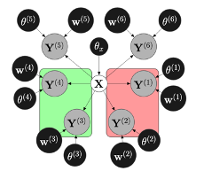
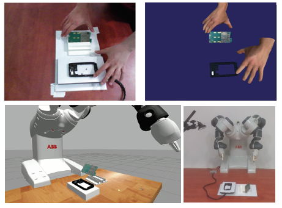

Research
My research is focused on data-efficient learning from multisensory data, e.g tactile, visual and proprioceptive, to equip robots with dexterity and high level reasoning required for achieving complex tasks autonomously. In particular, I am interested in studying how to better integrate touch sensing for robotic grasping and manipulation. Some research directions and relevant selected papers are listed below.
Multimodal (e.g. tactile, visual, proprioceptive) sensing for grasp analysis
A Probabilistic Framework for Task-Oriented Grasp Stability Assessment, IEEE International Conference on Robotics and Automation, 2013
We present a probabilistic framework for grasp modeling and stability assessment. The framework facilitates assessment of grasp success in a goal-oriented way, taking into account both geometric constraints for task affordances and stability requirements specific for a task. We integrate high-level task information introduced by a teacher in a supervised setting with low-level stability requirements acquired through a robot's self-exploration. The conditional relations between tasks and multiple sensory streams (vision, proprioception and tactile) are modeled using Bayesian networks. The generative modeling approach both allows prediction of grasp success, and provides insights into dependencies between variables and features relevant for object grasping.
Assessing grasp stability based on learning and haptic data, IEEE Transactions on Robotics, 2011
An important ability of a robot that interacts with the environment and manipulates objects is to deal with the uncertainty in sensory data. Sensory information is necessary to, for example, perform online assessment of grasp stability. We present methods to assess grasp stability based on haptic data and machine-learning methods, including AdaBoost, support vector machines (SVMs), and hidden Markov models (HMMs). In particular, we study the effect of different sensory streams to grasp stability. This includes object information such as shape; grasp information such as approach vector; tactile measurements from fingertips; and joint configuration of the hand. Sensory knowledge affects the success of the grasping process both in the planning stage (before a grasp is executed) and during the execution of the grasp (closed-loop online control). In this paper, we study both of these aspects. We propose a probabilistic learning framework to assess grasp stability and demonstrate that knowledge about grasp stability can be inferred using information from tactile sensors. Experiments on both simulated and real data are shown. The results indicate that the idea to exploit the learning approach is applicable in realistic scenarios, which opens a number of interesting venues for the future research.
Analytic Grasp Success Prediction with Tactile Feedback, IEEE International Conference on Robotics and Automation, 2016
Predicting grasp success is useful for avoiding failures in many robotic applications. Based on reasoning in wrench space, we address the question of how well analytic grasp success prediction works if tactile feedback is incorporated. Tactile information can alleviate contact placement uncertainties and facilitates contact modeling. We introduce a wrench-based classifier and evaluate it on a large set of real grasps. The key finding of this work is that exploiting tactile information allows wrench-based reasoning to perform on a level with existing methods based on learning or simulation. Different from these methods, the suggested approach has no need for training data, requires little modeling effort and is computationally efficient. Furthermore, our method affords task generalization by considering the capabilities of the grasping device and expected disturbance forces/moments in a physically meaningful way.
Grasp and manipulation planning
Dynamic grasp and trajectory planning for moving objects, Autonomous Robots, 2019
This paper shows how a robot arm can follow and grasp moving objects tracked by a vision system, as is needed when a human hands over an object to the robot during collaborative working. While the object is being arbitrarily moved by the human co-worker, a set of likely grasps, generated by a learned grasp planner, are evaluated online to generate a feasible grasp with respect to both: the current configuration of the robot respecting the target grasp; and the constraints of finding a collision-free trajectory to reach that configuration. A task-based cost function enables relaxation of motion-planning constraints, enabling the robot to continue following the object by maintaining its end-effector near to a likely pre-grasp position throughout the object’s motion. We propose a method of dynamic switching between: a local planner, where the hand smoothly tracks the object, maintaining a steady relative pre-grasp pose; and a global planner, which rapidly moves the hand to a new grasp on a completely different part of the object, if the previous graspable part becomes unreachable. Various experiments are conducted using a real collaborative robot and the obtained results are discussed.
Benchmarking Protocol for Grasp Planning Algorithms, IEEE Robotics and Automation Letters, 2020
Numerous grasp planning algorithms have been proposed since the 1980s. The grasping literature has expanded rapidly in recent years, building on greatly improved vision systems and computing power. Methods have been proposed to plan stable grasps on known objects (exact 3D model is available), familiar objects (e.g. exploiting a-priori known grasps for different objects of the same category), or novel object shapes observed during task execution. Few of these methods have ever been compared in a systematic way, and objective performance evaluation of such complex systems remains problematic. Difficulties and confounding factors include different assumptions and amounts of a-priori knowledge in different algorithms; different robots, hands, vision systems and setups in different labs; and different choices or application needs for grasped objects. Also, grasp planning can use different grasp quality metrics (including empirical or theoretical stability measures) or other criteria, e.g., computational speed, or combination of grasps with reachability considerations. While acknowledging and discussing the outstanding difficulties surrounding this complex topic, we propose a methodology for reproducible experiments to compare the performance of a variety of grasp planning algorithms. Our protocol attempts to improve the objectivity with which different grasp planners are compared by minimizing the influence of key components in the grasping pipeline, e.g., vision and pose estimation. The protocol is demonstrated by evaluating two different grasp planners: a state-of-the-art model-free planner and a popular open-source model-based planner. We show results from real-robot experiments with a 7-DoF arm and 2-finger hand, as well as simulation-based evaluations.
Grasp Moduli Spaces and Spherical Harmonics, IEEE International Conference on Robotics and Automation, 2014
In this work, we present a novel representation which enables a robot to reason about, transfer and optimize grasps on various objects by representing objects and grasps on them jointly in a common space. In our approach, objects are parametrized using smooth differentiable functions which are obtained from point cloud data via a spectral analysis. We show how, starting with point cloud data of various objects, one can utilize this space consisting of grasps and smooth surfaces in order to continuously deform various surface/grasp configurations with the goal of synthesizing force closed grasps on novel objects. We illustrate the resulting shape space for a collection of real world objects using multidimensional scaling and show that our formulation naturally enables us to use gradient ascent approaches to optimize and simultaneously deform a grasp from a known object towards a novel object.
Grasp adaptation
Learning of Grasp Adaptation through Experience and Tactile Sensing, IEEE/RSJ International Conference on Intelligent Robots and Systems, 2014
To perform robust grasping, a multi-fingered robotic hand should be able to adapt its grasping configuration, i.e., how the object is grasped, to maintain the stability of the grasp. Such a change of grasp configuration is called grasp adaptation and it depends on the controller, the employed sensory feedback and the type of uncertainties inherit to the problem. This paper proposes a grasp adaptation strategy to deal with uncertainties about physical properties of objects, such as the object weight and the friction at the contact points. Based on an object-level impedance controller, a grasp stability estimator is first learned in the object frame. Once a grasp is predicted to be unstable by the stability estimator, a grasp adaptation strategy is triggered according to the similarity between the new grasp and the training examples. Experimental results demonstrate that our method improves the grasping performance on novel objects with different physical properties from those used for training.

Probabilistic Consolidation of Grasp Experience, IEEE International Conference on Robotics and Automation, 2016
We present a probabilistic model for joint representation of several sensory modalities and action parameters in a robotic grasping scenario. Our non-linear probabilistic latent variable model encodes relationships between grasp-related parameters, learns the importance of features, and expresses confidence in estimates. The model learns associations between stable and unstable grasps that it experiences during an exploration phase. We demonstrate the applicability of the model for estimating grasp stability, correcting grasps, identifying objects based on tactile imprints and predicting tactile imprints from object-relative gripper poses. We performed experiments on a real platform with both known and novel objects, i.e., objects the robot trained with, and previously unseen objects. Grasp correction had a 75% success rate on known objects, and 73% on new objects. We compared our model to a traditional regression model that succeeded in correcting grasps in only 38% of cases.
Object modelling and scene understanding

Enhancing Visual Perception of Shape through Tactile Glances, IEEE/RSJ International Conference on Intelligent Robots and Systems, 2013
Object shape information is an important parameter in robot grasping tasks. However, it may be difficult to obtain accurate models of novel objects due to incomplete and noisy sensory measurements. In addition, object shape may change due to frequent interaction with the object (cereal boxes, etc). In this paper, we present a probabilistic approach for learning object models based on visual and tactile perception through physical interaction with an object. Our robot explores unknown objects by touching them strategically at parts that are uncertain in terms of shape. The robot starts by using only visual features to form an initial hypothesis about the object shape, then gradually adds tactile measurements to refine the object model. Our experiments involve ten objects of varying shapes and sizes in a real setup. The results show that our method is capable of choosing a small number of touches to construct object models similar to real object shapes and to determine similarities among acquired models.

Object shape estimation and modeling, based on sparse Gaussian process implicit surfaces, combining visual data and tactile exploration, Robotics and Autonomous Systems, 2020
We study Gaussian Process Implicit Surface (GPIS) representation. GPIS enables a non-parametric probabilistic reconstruction of object surfaces from 3D data points, while also providing a principled approach to encode the uncertainty associated with each region of the reconstruction. We investigate different configurations for GPIS, and interpret an object surface as the level-set of an underlying sparse GP. Experiments are performed on both synthetic data, and also real data sets obtained from two different robots physically interacting with objects. We evaluate performance by assessing how close the reconstructed surfaces are to ground-truth object models. We also evaluate how well objects from different categories are clustered, based on the reconstructed surface shapes. Results show that sparse GPs enable a reliable approximation to the full GP solution, and the proposed method yields adequate surface representations to distinguish objects. Additionally the presented approach is shown to provide computational efficiency, and also efficient use of the robot’s exploratory actions.

Learning to Disambiguate Object Hypotheses through Self-Exploration, IEEE-RAS International Conference on Humanoid Robots, 2014
We present a probabilistic learning framework to form object hypotheses through interaction with the environment. A robot learns how to manipulate objects through pushing actions to identify how many objects are present in the scene. We use a segmentation system that initializes object hypotheses based on RGBD data and adopt a reinforcement approach to learn the relations between pushing actions and their effects on object segmentations. Trained models are used to generate actions that result in minimum number of pushes on object groups, until either object separation events are observed or it is ensured that there is only one object acted on. We provide baseline experiments that show that a policy based on reinforcement learning for action selection results in fewer pushes, than if pushing actions were selected randomly.
Applications (Assembly, Nuclear Decommissioning, Service)

Teaching Assembly by Demonstration using Advanced Human Robot Interaction and a Knowledge Integration Framework, International Conference on Flexible Automation and Intelligent Manufacturing, 2017
Conventional industrial robots are heavily dependent on hard automation that requires pre-specified fixtures and time-consuming (re)programming performed by experienced operators. In this work, teaching by human-only demonstration is used for reducing required time and expertise to setup a robotized assembly station. This is achieved by the proposed framework enhancing the robotic system with advanced perception and cognitive abilities, accessed through a user-friendly Human Robot Interaction interface. The approach is evaluated on a small parts’ assembly use case deployed onto a collaborative industrial robot testbed. Experiments indicate that the proposed approach allows inexperienced users to efficiently teach robots new assembly tasks.

Smart Assembly Robot with Advanced Functionalities (SARAFun), Impact, 2017
While Industrial robots are very successful in many areas of industrial manufacturing, assembly automation still suffers from complex time consuming programming and the need of dedicated hardware. ABB has developed YuMi, a collaborative inherently safe assembly robot that is expected to reduce integration costs significantly by offering a standardized hardware setup and simple fitting of the robot into existing workplaces. Internal Pilot testing at ABB has however shown that when YuMi is programmed with traditional methods the programming time even for simple assembly tasks will remain very long. The SARAFun project has been formed to enable a non-expert user to integrate a new bi-manual assembly task on a YuMi robot in less than a day. This will be accomplished by augmenting the YuMi robot with cutting edge sensory and cognitive abilities as well as reasoning abilities required to plan and execute an assembly task. The overall conceptual approach is that the robot should be capable of learning and executing assembly tasks in a human like manner. Studies will be made to understand how human assembly workers learn and perform assembly tasks. The human performance will be modelled and transferred to the YuMi robot as assembly skills. The robot will learn assembly tasks, such as insertion or folding, by observing the task being performed by a human instructor. The robot will then analyze the task and generate an assembly program, including exception handling, and design 3D printable fingers tailored for gripping the parts at hand. Aided by the human instructor, the robot will finally learn to perform the actual assembly task, relying on sensory feedback from vision, force and tactile sensing as well as physical human robot interaction. During this phase the robot will gradually improve its understanding of the assembly at hand until it is capable of performing the assembly in a fast and robust manner.
Towards Robotic Manipulation for Nuclear Decommissioning: A Pilot Study on Tele-operation and Autonomy IEEE International Conference on Robotics and Automation for Humanitarian Applications, 2016
We present early pilot-studies of a new international project, developing advanced robotics to handle nuclear waste. Despite enormous remote handling requirements, there has been remarkably little use of robots by the nuclear industry. The few robots deployed have been directly teleoperated in rudimentary ways, with no advanced control methods or autonomy. Most remote handling is still done by an aging workforce of highly skilled experts, using 1960s style mechanical Master-Slave devices. In contrast, this paper explores how novice human operators can rapidly learn to control modern robots to perform basic manipulation tasks; also how autonomous robotics techniques can be used for operator assistance, to increase throughput rates, decrease errors, and enhance safety. We compare humans directly teleoperating a robot arm, against human-supervised semi-autonomous control exploiting computer vision, visual servoing and autonomous grasping algorithms. We show how novice operators rapidly improve their performance with training; suggest how training needs might scale with task complexity; and demonstrate how advanced autonomous robotics techniques can help human operators improve their overall task performance. An additional contribution of this paper is to show how rigorous experimental and analytical methods from human factors research, can be applied to perform principled scientific evaluations of human test-subjects controlling robots to perform practical manipulative tasks.
Towards advanced robotic manipulation for nuclear decommissioning, Robots Operating in Hazardous Environments, InTechOpen, 2017
Despite enormous remote handling requirements, remarkably very few robots are being used by the nuclear industry. Most of the remote handling tasks are still performed manually, using conventional mechanical master-slave devices. The few robotic manipulators deployed are directly tele-operated in rudimentary ways, with almost no autonomy or even a pre-programmed motion. In addition, majority of these robots are under-sensored (ie with no proprioception), which prevents them to use for automatic tasks. In this context, primarily this chapter discusses the human operator performance in accomplishing heavy-duty remote handling tasks in hazardous environments such as nuclear decommissioning. Multiple factors are evaluated to analyse the human operators’ performance and workload. Also, direct human tele-operation is compared against human-supervised semi-autonomous control exploiting computer vision. Secondarily, a vision-guided solution towards enabling advanced control and automating the undersensored robots is presented. Maintaining the coherence with real nuclear scenario, the experiments are conducted in the lab environment and results are discussed.